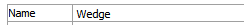
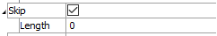
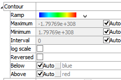
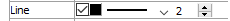

Particle Trace
Description
Draw the path taken by traced particles; may also contour the path according to its velocity magnitude.
Visual Reference: Attribute List
Name
Identify by name which elements in the plot item should be included in the plot.
Name:
Skip
What does ???
Skip: ??
Contour
Specify settings for contouring.
Contour: A container for settings that control contouring options.
Ramp: Set the color ramp to use for rendering. The five options, in order shown in the select box, are: rainbow (blue to red), grayscale, blue-white-red, blue-cyan-white-yellow-red, green-white-red.
Maximum: Set the highest value (right end) of the color ramp automatically (auto checked) or with a specified value (auto unchecked). Values above Maximum are filled with the Above color.
Minimum: Set the lowest value (left end) of the color ramp automatically (auto checked) or with a specified value (auto unchecked). Values below Minimum are filled with the Below color.
Interval: Specify the number of color intervals used in when rendering; this value defaults to a number between 8-16 if auto is checked.
Log Scale: Specify that the color intervals are logarithmically spaced when checked.
Reversed: Reverse the color sequence of the color ramp when checked.
Below: Specify which color to use for values below the Minimum. The left end of the color ramp is used with auto checked. When unchecked, the color swatch control specifies the color.
Above: Specify which color to use for values above the Maximum. The right end of the color ramp is used with auto checked. When unchecked, the color swatch control specifies the color.
Line

Set the outline properties of the plot item.
Line: set line style and thickness.
Note
Depending on context, this control may also feature:
–a checkbox for including (checked) the line in the plot item, and/or
–a color control for setting the color of the line.
Legend
Set display of the item in the plot legend. All plot items, at minimum, have a Title attribute.
Legend: Show (checked) all information about the plot item in the legend.
Title: Show (checked) the title of the plot item in the legend. The “Alias:” field may be used to specify a custom title for the item.
Size: Set the size of text in the legend.
Font: Set the font face used for the text.
Style: Set the text style (the options are normal, bold, italic, bold-italic).
Color: Set the text color.
Beneath Title, the Particle Trace plot item also provides controls in Legend for Contour. The sub-attributes of this is the same as those for Title, with the addition of a Max-Labels attribute, which controls the number of colors used to illustrate the color ramp in the Legend.
| Was this helpful? ... | UDEC © 2018, Itasca | Updated: Mar 15, 2024 |